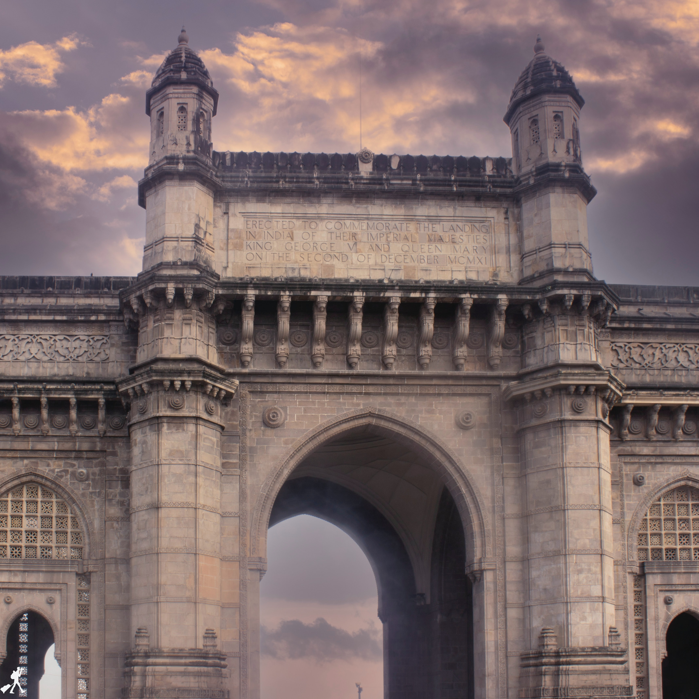
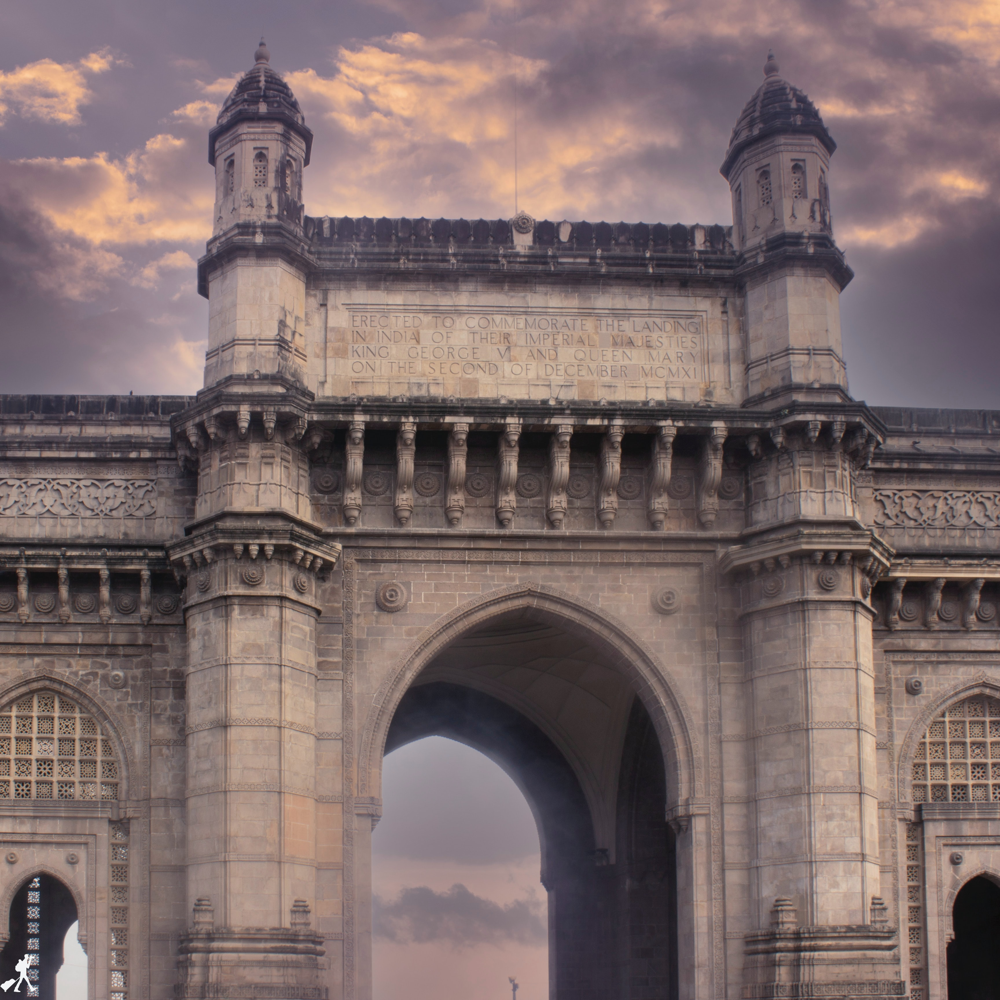
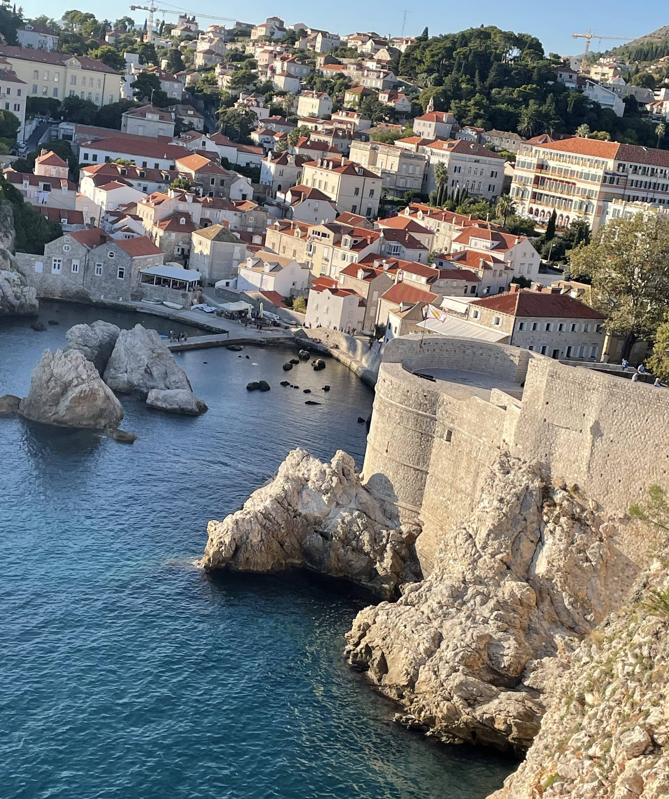
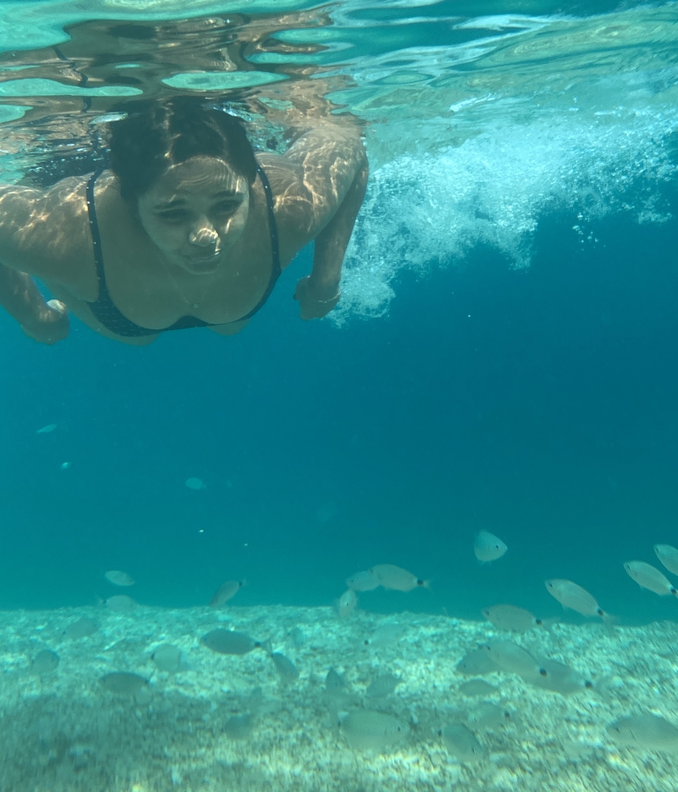

This page is all about my stories and experiences travelling around,
showcasing all the good things this beautiful world has to offer to its guests.
Yes we are the guests on this planet and this planet has lots of surprises planned for its guests.
 

City of dreams, as they say. One of the most modern cities in India, also the financial capital of the country. This city never sleeps closest to my heart for several reasons. It has a beautiful view of the Arabian sea. You can experience the fast pace of the city. A city with a population of 20 million is a thrilling experience. From super luxurious places to survival, this city says a lot. I find can find calmness here despite this city being chaotic. Mumbai gives you vibes like no other place. Click full story to continue…

This was my 1st home in Germany, which has given me an experience of the beautiful culture of this country. This city is located in the southwest part of Germany and next to the black forest. A small city with incredible weather and warm people. I have lived here for 3 long years, and I still miss this place. It holds a very special place in my heart. I would always call this place my second home. Click full story to continue…

What shall I write about this place, no words can describe the beauty and the vibe one can experience here. Dubrovnik is a city in the southern part of Croatia. An incredibly beautiful and scenic place I have ever visited in my life. This city is surrounded by the Adriatic Sea, and trust me this sea is magical. This place is also famous for its location which was featured in my favourite and everyone’s favourite “Game of through”. Click full story to continue…

This picture is from my trip to Croatia, I went to an island called Brac, which is around 45 minutes away from the city called split by ferry. I’m a water baby and swimming with the fish was the cherry on the cake. This water is calm as it gets and relaxing. Underneath the water was an emotional experience for me. Nature can be so beautiful and has so much to offer, this thought blows my mind. Human beings are the luckiest as we can feel, experience, and sense this beautiful nature. Click full story to continue…